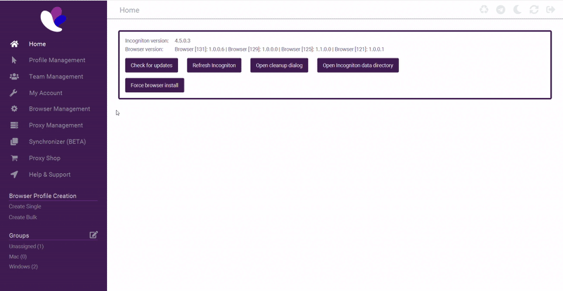
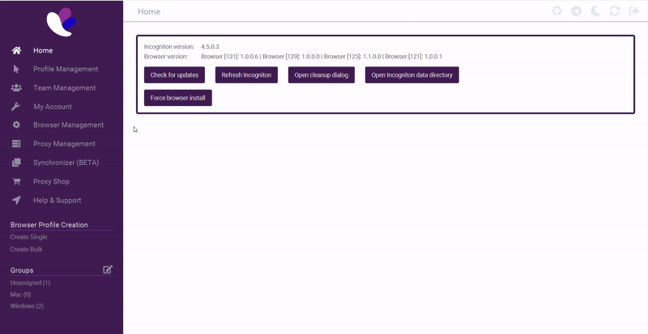
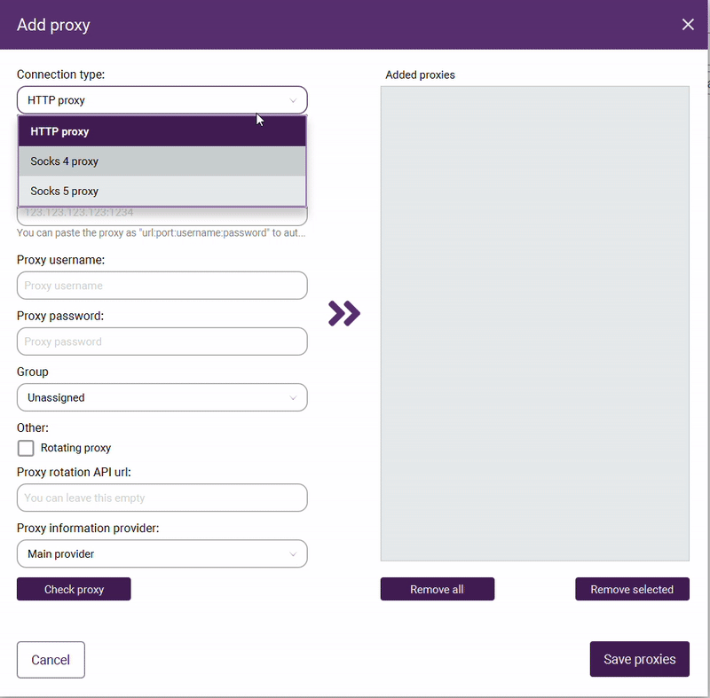
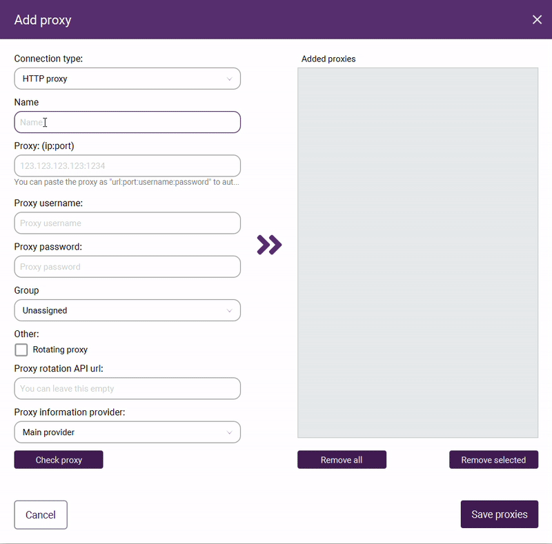
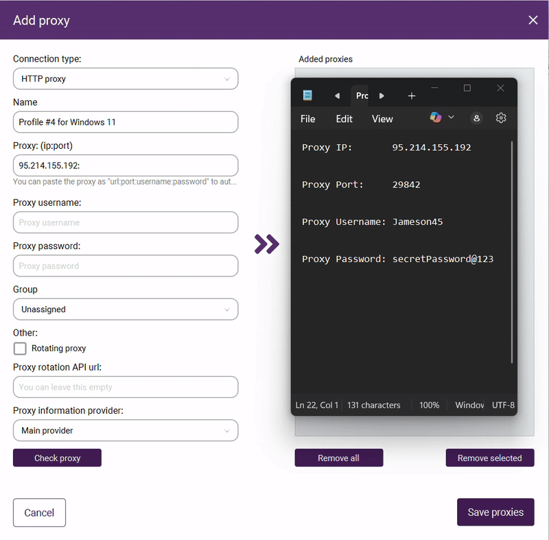
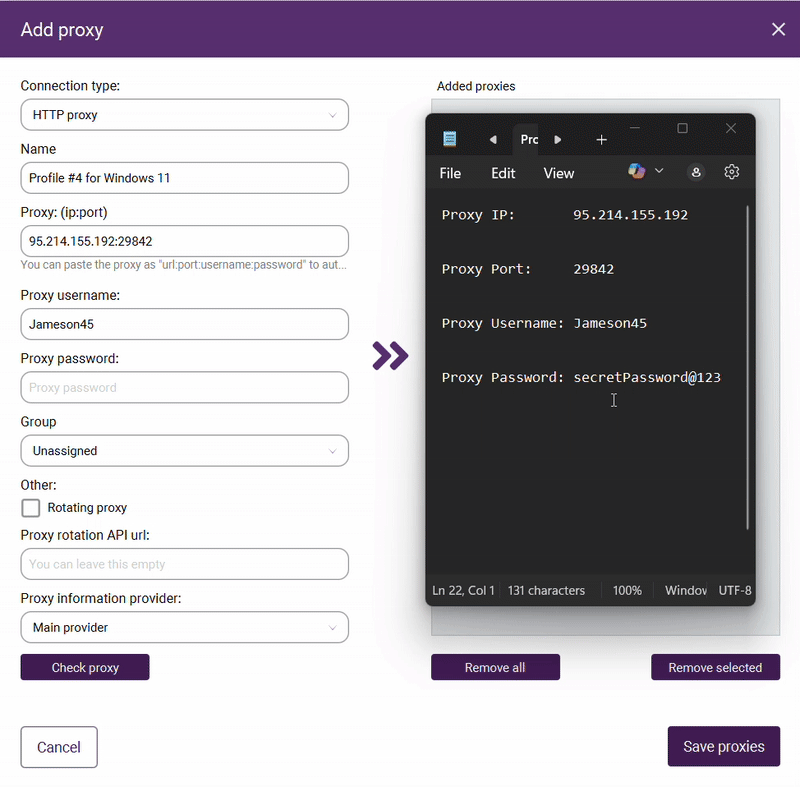
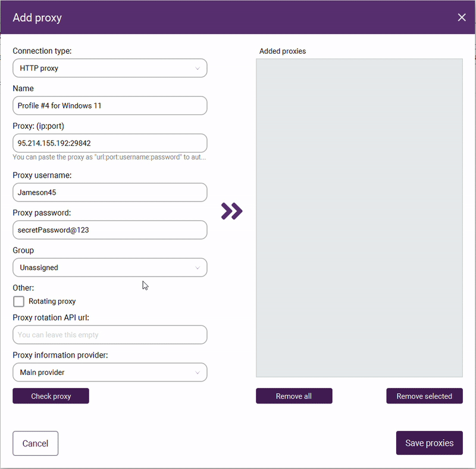
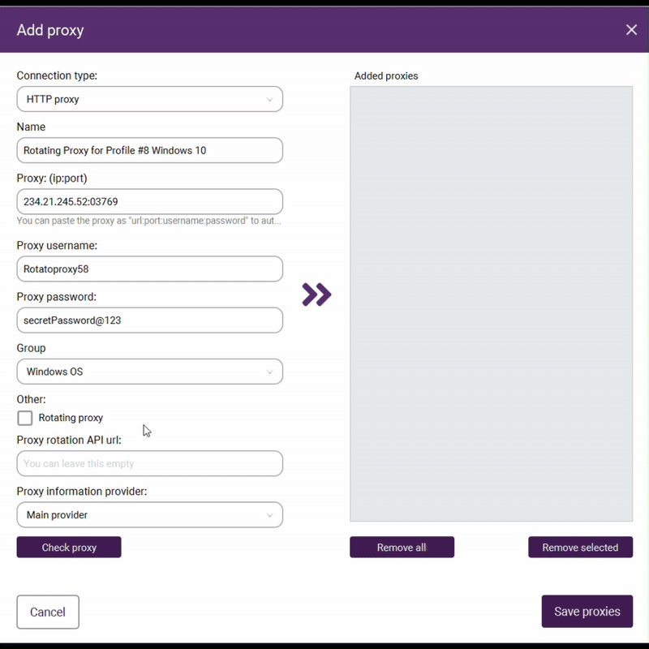
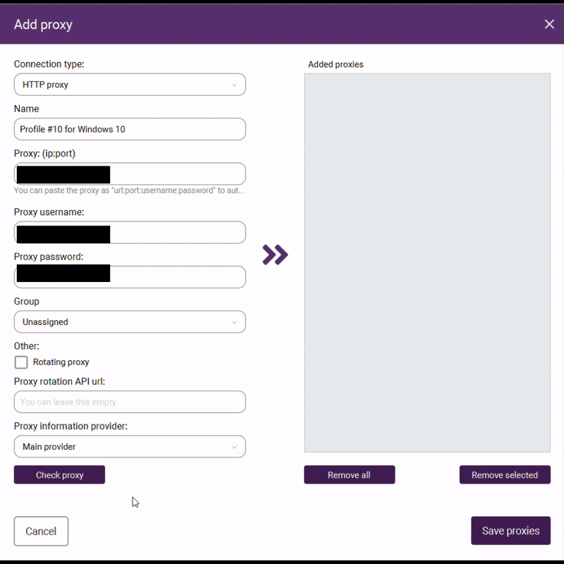

Proxy Management
Overview
Incogniton's anti-detect browser offers powerful proxy management capabilities that can be challenging to navigate for new users. This guide walks you through the optimal configuration and organization of your proxies to create a seamless setup that remains clear and manageable as your proxy and profile usage grows. For this tutorial, ensure you have a proxy ready with all the necessary requirements listed under "Prerequisites" on the Home page.
Create a group for your proxies
-
Navigate over to the "Proxy Management" tab on the left hand side of the home screen.

-
From inside the Proxy Management tab, Click on the "Groups" option in the left sidebar
-
Click the "New Group" button in the top right corner of the screen and type in a name.
Give your group a descriptive name that reflects the proxy use purpose
For Example: "US Location" "Facebook Accounts" "Windows OS"

Create a new proxy
-
From the "Proxy Management" tab, click the button "New Proxy" near the top right corner.

-
Select your proxies connection type from the "Connection type:" dropdown.
Your proxy provider will have specified whether you have an HTTP, SOCKS4, or a SOCKS5 connection type.

-
Click and type in a clear naming convention for your proxy under the "Name" field.
This will make it easier for you to distinguish between multiple proxies when your collection grows.

-
Enter the proxy's IP address under the "Proxy: (ip:port)" field.
-
follow the IP address with a colon (:) at the end.
For example: "123.45.67.89:"
-
Enter the proxy's port number in the "Proxy: (ip:port)" field after your IP address and a colon, without any spaces.
Your completed entry should look like "123.45.67.89:8080" where 8080 is the port number provided by your proxy service.

-
Enter the proxy's username in the designated "Proxy username" field.
-
Enter the proxy's password in the designated "Proxy password" field.

-
Select a group for the proxy from the "Group" dropdown.
Placing each proxy in the appropriate category ensures efficient organization as your collection grows.

Configure Rotating Proxies (If Applicable)
If you have purchased a "rotating proxy" that constantly changes locations.
-
Check the "Rotating Proxy" box under the field titled "Other:"
-
(Optional) Enter the proxy rotation API url into the designated "Proxy Rotation API URL:" field.

Test proxy connection
-
Click the "Check Proxy" button to run a connection test.
The results will appear on the right side of the button showing your proxy's connection status. This is to verify that your proxy is functioning correctly. Double-check your IP address, port number, username, and password entries for accuracy.

Save proxy configuration
-
Click the two purple arrows (>>) in the center of the screen
-
Click the "Save proxies" button located at the bottom right hand of the panel.

Conclusion
Properly configured and organized proxies are essential for maintaining a proper and seemless expierence in Incogniton. By following this guide and consistently applying good naming conventions and grouping strategies, you'll save significant time and avoid confusion as your proxy collection grows. Your organized proxy management system will allow you to quickly identify and select the right proxy for each profile, ensuring seamless operations across all your digital activities. As you become more comfortable with the platform, you may develop additional organizational methods tailored to your specific needs.